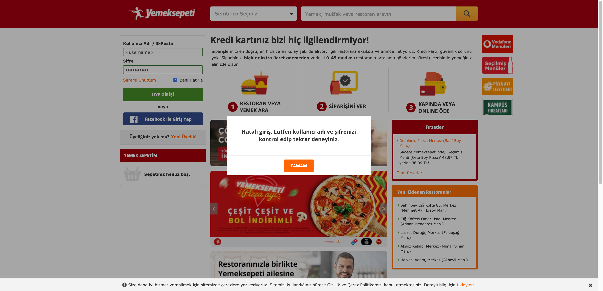

Started
Jun 15, 2021 05:25:20 PM
Ended
Jun 15, 2021 05:26:16 PM
Features Passed
0
Features Failed
2
Features
Scenarios
Steps
Timeline
Tags
| Name | Passed | Failed | Skipped | Others | Passed % |
|---|---|---|---|---|---|
| @login | 3 | 3 | 0 | 0 | 50% |
| @myFavorite | 0 | 2 | 0 | 0 | 0% |
| @web | 3 | 5 | 0 | 0 | 37.5% |
System/Environment
| Name | Value |
|---|---|
| build | 1.1 |
| os | Mac |
-
Web - Login
17:25:21 PM / 00:00:55:252 Fail
Web - Login
06.15.2021 17:25:21 06.15.2021 17:26:16 00:00:55:252 · #test-id=1@web @loginPassWeb - Login Success ScenarioGiven YS User open the Login PageAnd YS User try to loginusername password busraozdmr.80@gmail.com B.c.1993 Then YS User should logged-inFailWeb - Login Fail ScenariosPassWeb - Login Fail ScenariosGiven YS User open the Login PageAnd YS User try to loginusername password testfail B.c.1993 Then YS User have fail message "Hatalı giriş. Lütfen kullanıcı adı ve şifrenizi kontrol edip tekrar deneyiniz." at Login PagePassWeb - Login Fail ScenariosGiven YS User open the Login PageAnd YS User try to loginusername password busraozdmr.80@gmail.com testfail Then YS User have fail message "Hatalı giriş. Lütfen kullanıcı adı ve şifrenizi kontrol edip tekrar deneyiniz." at Login PageFailWeb - Login Fail ScenariosGiven YS User open the Login PageAnd YS User try to loginusername password testfail testfail Then YS User have fail message "Hatalı giriş. Lütfen kullanıcı adı ve şifrenizi kontrol edip tekrar deneyiniz." at Login PageHook.Hook.quitBrowser()FailWeb - Login Fail Scenarios with fail case for reportGiven YS User open the Login PageAnd YS User try to loginusername password Then YS User have fail message "Hatalı giriş." at Login PageHook.Hook.tearDown(io.cucumber.java.Scenario) -
Web - Added Favorite Restaurant
17:25:21 PM / 00:00:34:625 Fail
Web - Added Favorite Restaurant
06.15.2021 17:25:21 06.15.2021 17:25:56 00:00:34:625 · #test-id=3@web @myFavoriteFailAddedFavoriteRestaurant - Added Favorite Restaurant SuccessGiven YS User open the Login PageAnd YS User try to loginusername password busraozdmr.80@gmail.com B.c.1993 Then YS User should logged-inAnd YS User close banabi popupAnd YS User choose location "Merkez (Şirinevler Mah.)"And YS User search "döner"And YS User click first restaurantAnd YS User click added my favorite restaurantThen YS User should have "Favorilerden Çıkar"Step skippedHook.Hook.tearDown(io.cucumber.java.Scenario)
-
@login
6 tests
@login
3 passed 3 failedStatus Timestamp TestName Fail 17:25:21 PM Web - Login Pass 17:25:21 PM Web - Login Success Scenario Web - Login.Web - Login Success ScenarioPass 17:25:37 PM Web - Login Fail Scenarios Web - Login.Web - Login Fail ScenariosPass 17:25:45 PM Web - Login Fail Scenarios Web - Login.Web - Login Fail ScenariosFail 17:25:54 PM Web - Login Fail Scenarios Web - Login.Web - Login Fail ScenariosFail 17:26:05 PM Web - Login Fail Scenarios with fail case for report Web - Login.Web - Login Fail Scenarios with fail case for report -
@myFavorite
2 tests
@myFavorite
2 failedStatus Timestamp TestName Fail 17:25:21 PM Web - Added Favorite Restaurant Fail 17:25:21 PM AddedFavoriteRestaurant - Added Favorite Restaurant Success Web - Added Favorite Restaurant.AddedFavoriteRestaurant - Added Favorite Restaurant Success -
@web
8 tests
@web
3 passed 5 failedStatus Timestamp TestName Fail 17:25:21 PM Web - Login Pass 17:25:21 PM Web - Login Success Scenario Web - Login.Web - Login Success ScenarioFail 17:25:21 PM Web - Added Favorite Restaurant Fail 17:25:21 PM AddedFavoriteRestaurant - Added Favorite Restaurant Success Web - Added Favorite Restaurant.AddedFavoriteRestaurant - Added Favorite Restaurant SuccessPass 17:25:37 PM Web - Login Fail Scenarios Web - Login.Web - Login Fail ScenariosPass 17:25:45 PM Web - Login Fail Scenarios Web - Login.Web - Login Fail ScenariosFail 17:25:54 PM Web - Login Fail Scenarios Web - Login.Web - Login Fail ScenariosFail 17:26:05 PM Web - Login Fail Scenarios with fail case for report Web - Login.Web - Login Fail Scenarios with fail case for report
-
org.openqa.selenium.NoSuchElementException
1 tests
org.openqa.selenium.NoSuchElementException
1 failedStatus Timestamp TestName Fail 17:25:53 PM And YS User click added my favorite restaurant Web - Added Favorite Restaurant.AddedFavoriteRestaurant - Added Favorite Restaurant Success.And YS User click added my favorite restaurant -
org.openqa.selenium.WebDriverException
1 tests
org.openqa.selenium.WebDriverException
1 failedStatus Timestamp TestName Fail 17:26:02 PM Hook.Hook.quitBrowser() Web - Login.Web - Login Fail Scenarios.Hook.Hook.quitBrowser() -
org.junit.ComparisonFailure
1 tests
org.junit.ComparisonFailure
1 failedStatus Timestamp TestName Fail 17:26:14 PM Then YS User have fail message "Hatalı giriş." at Login Page Web - Login.Web - Login Fail Scenarios with fail case for report.Then YS User have fail message "Hatalı giriş." at Login Page